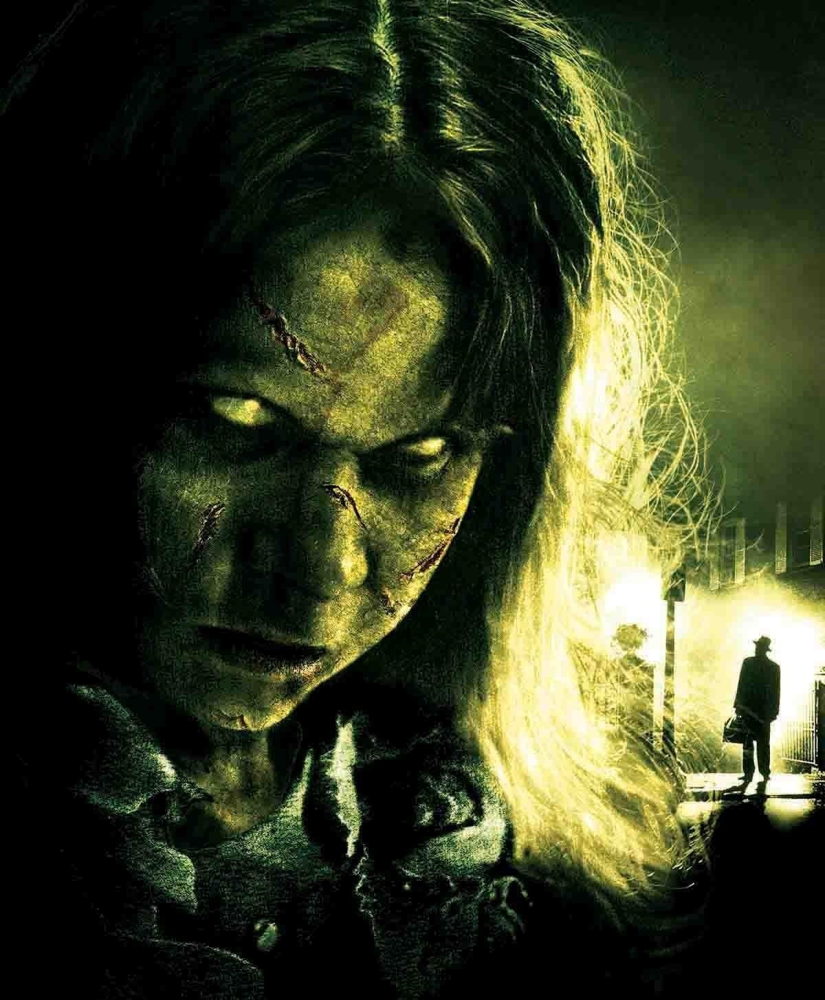

The Exorcist
Story behind the movie

The true story behind “The Exorcist” is more terrifying than the movies themselves. The film is based on the experiences of Ed and Lorraine Warren, renowned paranormal investigators. In the late 1940s, a German-American family in suburban Washington, D.C., faced inexplicable horrors. Their 13-year-old son, Ronald Hunkeler (later known as Roland Doe or Robbie Mannheim), grappled with disturbing behavior after the loss of his beloved Aunt Harriet. Harriet, a spiritualist, had introduced him to the Ouija board. At night, Roland would erupt into screaming fits, enter trance-like states, and bear scratches and red lines on his body. Desperate, his parents sought help in St. Louis, where Jesuit priests performed a harrowing series of exorcisms. The boy’s bed moved on its own, violently sliding across the room. On April 18, 1949, after invoking St. Michael, the priests declared victory: “He’s gone.” This chilling ordeal became the real-life inspiration for "The Exorcist".